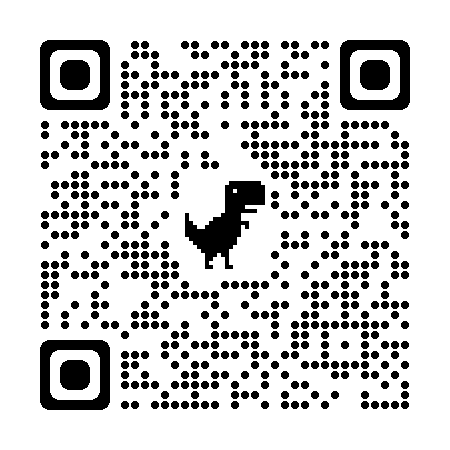

<ion-header [translucent]="true">
  <ion-toolbar>
    <ion-buttons slot="start">
      <ion-back-button defaultHref="/"></ion-back-button>

    </ion-buttons>
  </ion-toolbar>
</ion-header>


<ion-content [fullscreen]="true">
  <div class="container">
    <ion-card>
      
      <br> <br>
      <ion-button color="warning" expand="block" id="open-loading" (click)="EscanearQR()">Escanear Codigo QR</ion-button>
      <ion-loading class="custom-loading" trigger="open-loading" message="Loading..." [duration]="2000"></ion-loading>
    </ion-card>
  </div>
</ion-content>
